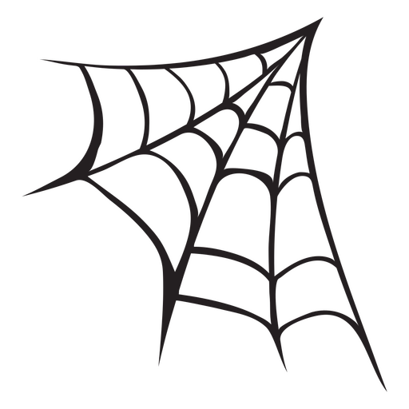
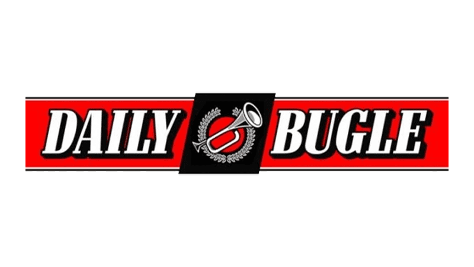
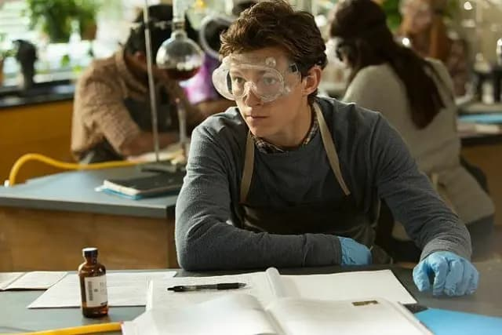
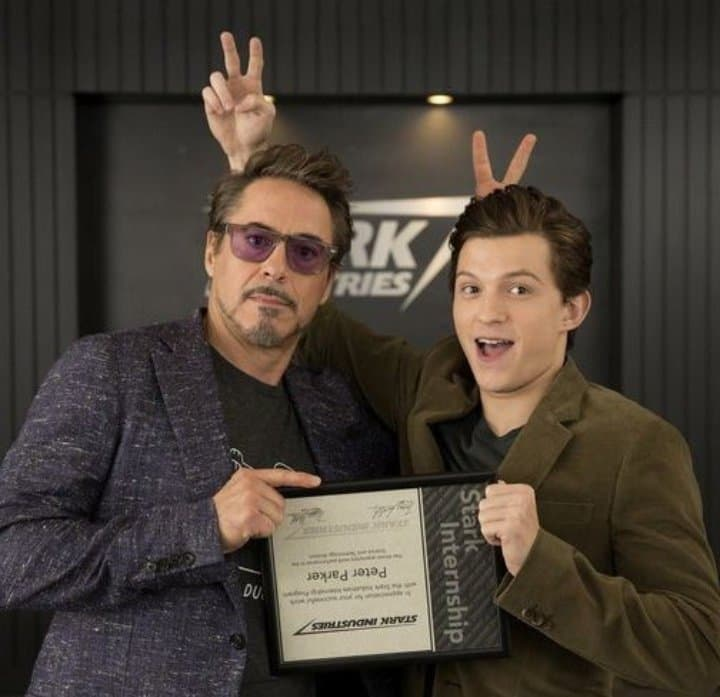
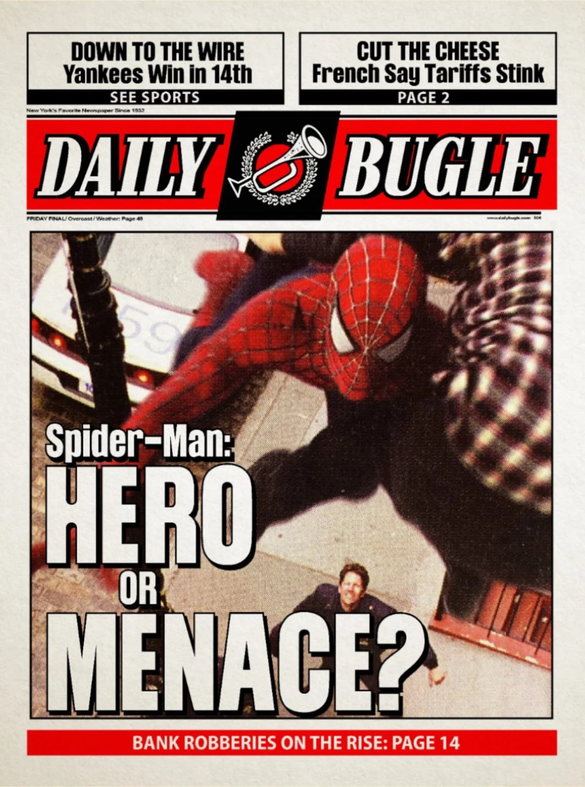

Mi trabajo en la ESU no es solo mirar por un microscopio. Me he especializado en la bio-mímesis, que es una forma elegante de decir 'copiar a la naturaleza porque es más lista que nosotros'. He desarrollado un polímero de cadena larga que tiene una resistencia a la tracción ridícula. Lo llamo 'Fluido de Prueba', y aunque mi tía May odia que deje botes abiertos por toda la casa, creo que va a revolucionar el transporte urbano (o al menos me ayudará a no caerme de los tejados)


Trabajar en la Torre Stark fue como vivir en el futuro. Mi labor allí consistía en aplicar mi conocimiento de polímeros a la nanotecnología. El Sr. Stark me dio acceso a hardware que parece magia. Colaboré en el diseño de interfaces neuronales para trajes de alta tecnología y en la mejora de la movilidad en entornos de gravedad cero. Básicamente, si un traje tiene que ser ligero como una pluma pero duro como el diamante, yo soy el que echa los números.
"Ser fotógrafo para el Daily Bugle es mi 'trabajo de día', pero es mucho más que apretar un botón. Requiere una agilidad mental y física constante. He cubierto desde incendios en el Bronx hasta ataques de lagartos gigantes en las alcantarillas. Mi mayor logro fue la documentación del incidente de la Torre Oscorp; gracias a esas fotos, la ciudad entendió el peligro de la hibridación genética sin control. Es peligroso, paga poco, pero Nueva York necesita que alguien cuente la verdad."
